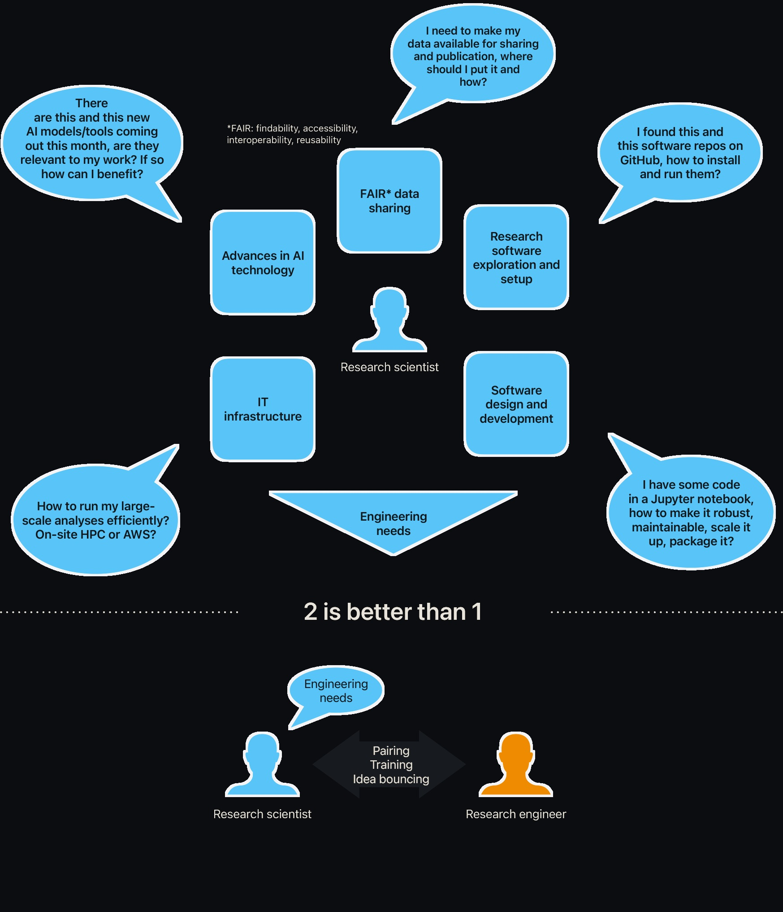
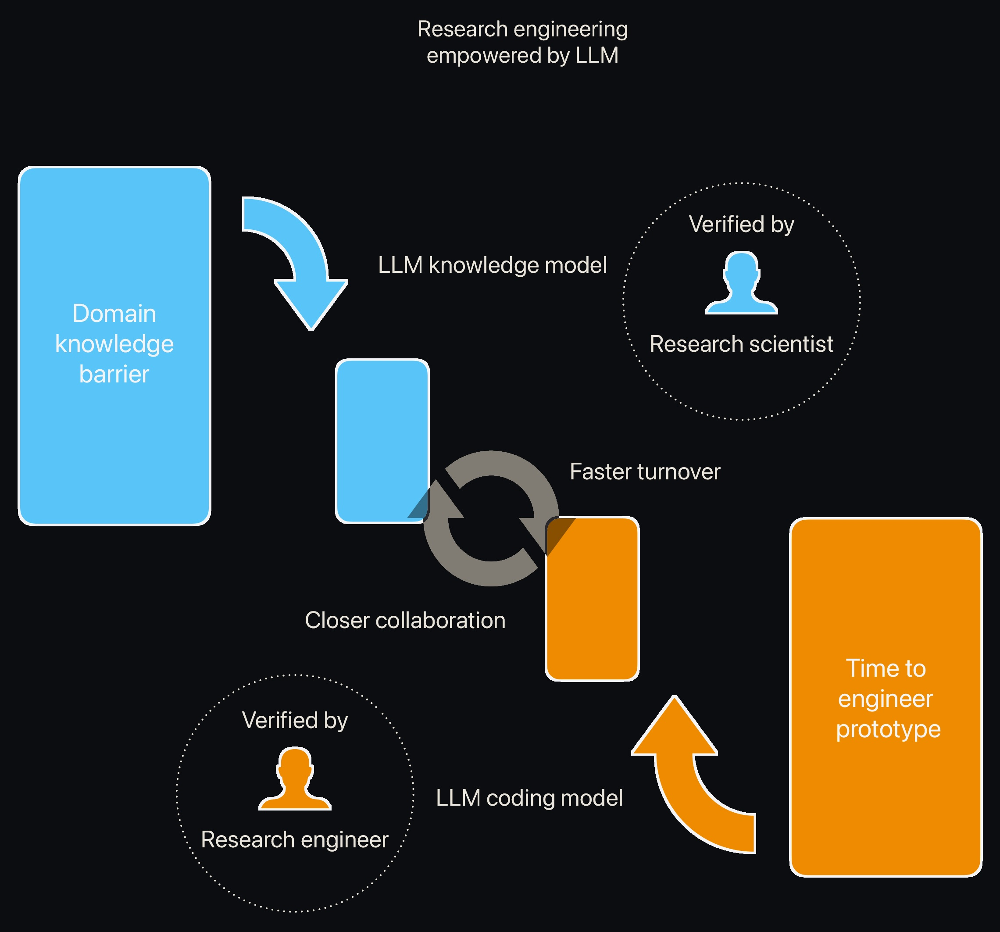

cire.works
Redistributing human intelligence in science
Research software has been predominantly developed by the scientists themselves.
However, the engineering demands in science are growing at a speed that scientists themselves are struggling to keep up with:
- Growing experimental scale
- Advanced machine learning methods for analysis
- Longer analysis pipelines and increasing reliance on computing clusters
What have large language models such as ChatGPT brought us?
A tool to retrieve knowledge at will
What have AI coding agents (such as Claude Code) brought us?
A tool to generate customised software solutions at scale
These tools will transform how scientific research is conducted.
We envision a new way of working in science — pairing the research scientist with a consulting research engineer.

For scientific researchers, they are faced with research problems that require highly customised solutions:
- Their priority is not generalisation (make software for the masses)
- They have a strong requirement for software to be precise and reproducible
For software engineers, as AI agentic coding is pushing for more and more decentralised software development:
- There is higher value for them in being situated closer to the user.
With LLM and AI, scientists fill in their gaps in engineering skills while engineers fill in their gaps in scientific domain knowledge.
Yet they face the problem of validation.
Language models, being ultimately statistical predictors, do not possess this level of critical analytical power. They are a tool, not a partner. They increase apparent productivity but do not change the velocity of human understanding.
What inspiration can we draw from what has been working in the past?
Scientists rely on peer review, software engineers on code review. Yet the review is not just about the end point, but also the journey along the way.
Every scientific discussion, every sharing of results regardless of success or failure — they matter because these reviews come from different perspectives. Prof Itai Yanai has a great article on this topic: It takes two to think
Human–intelligence interaction, not AI, is what has been pushing the boundary of science forward so far.

We redefine research engineer as a profession that architects, orchestrates and optimises the research process itself.
A computational solution to a research problem can be dissected into:
- Scientific logic
- Mathematical algorithm
- Software design and engineering
A consulting research engineer is able to provide support to academic groups on all these components.
An ideal research engineer is someone who:
Is a doctoral-level research scientist that is highly experienced in computational methods;
Has a strong interest in technological translation into scientific research applications;
Is seeking an alternative leadership route in academia focusing on method development.
For the partner scientist, a research engineer is an experienced co-worker, reviewer, idea-bouncer, tech and data expert integrated into the group and dedicated to the project.
cire.works
/sea-ree/ — like Siri
Cire, company of informatics and research engineering, is the initiative consulting firm advocating for a redistribution of human intelligence in science at the advent of the AI era.
We are dedicated to turning AI outputs into human knowledge in science, and we need humans, not AI, to do this job.
Cire works. Follow our journey.
Connect with the founder Eric Hidari on LinkedIn: linkedin.com/in/eric-hidari
If you have a question or suggestion regarding the Cire initiative, we would be grateful to hear from you.